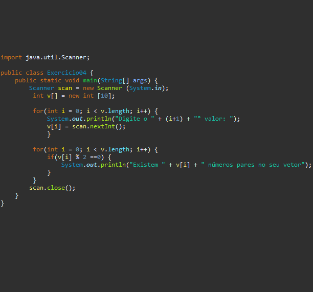

O Loop For, é responsável por iterar alguma parte de nosso código quando precisamos, não sendo necessário reescrevê-lo, automatizando, dessa maneira, qualquer incremento ou decremento de uma variável.
O laço For possibilitará a execução de determinada variável em nosso programa, a qual é iniciada pelo loop. Conforme nossos sistemas vão ficando mais complexos, a alteração de algumas dessas variáveis pode causar complicações durante seu desenvolvimento por um programador não muito experiente.
